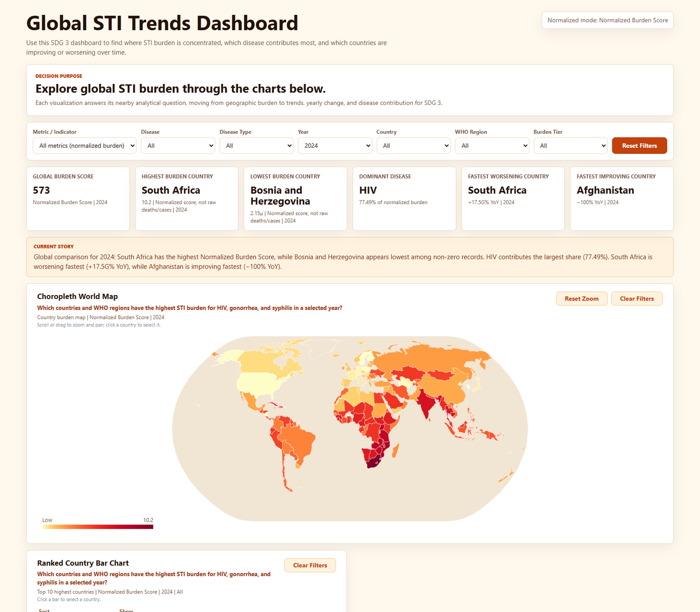
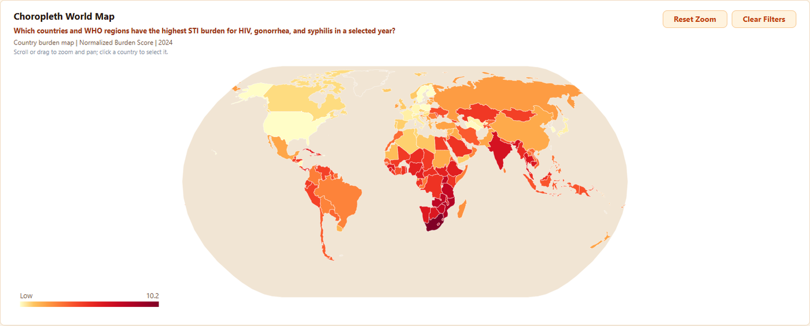
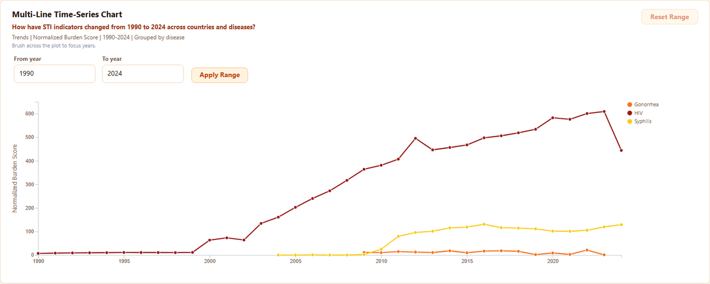
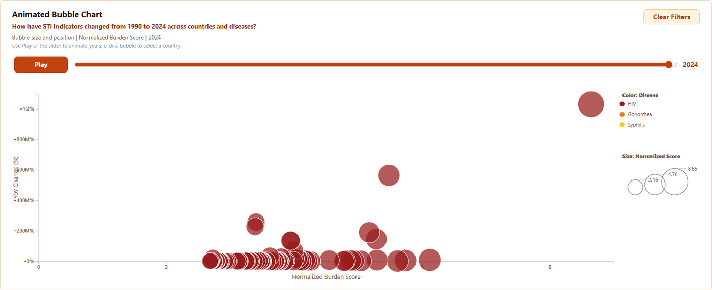
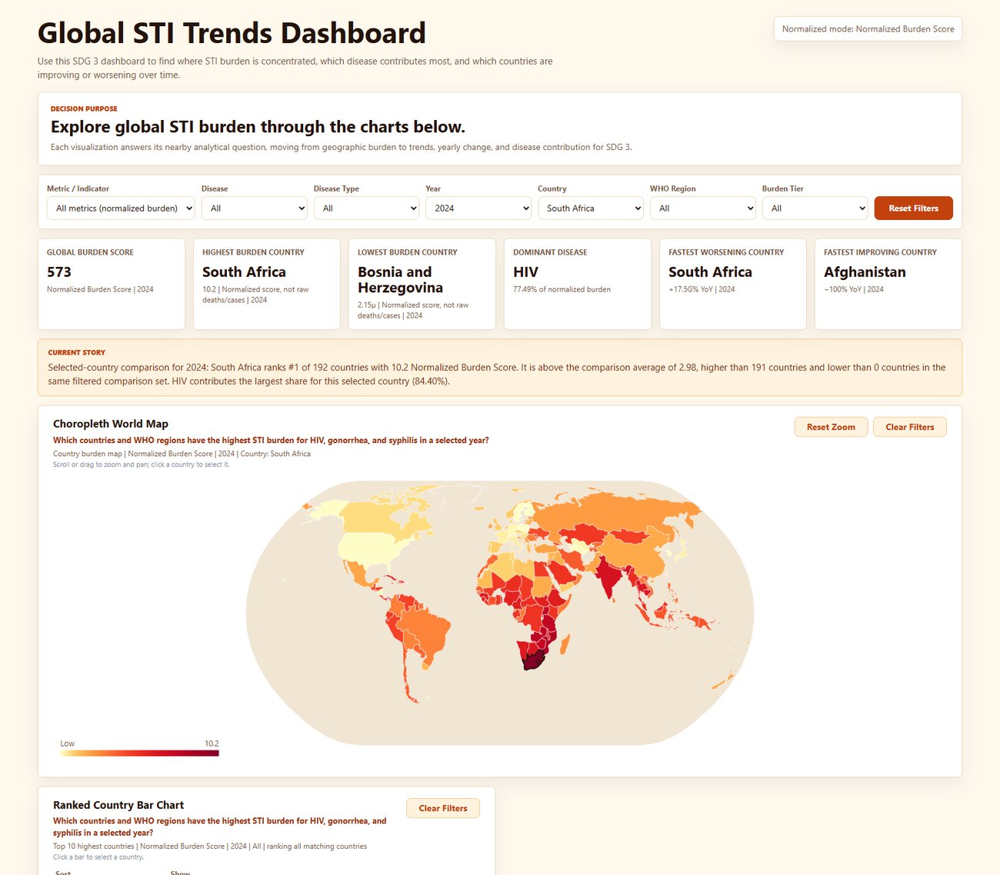

Global STI Trends: six linked views, no chart library
Thirty-five years of HIV, gonorrhoea and syphilis burden across 200 countries, framed against UN Sustainable Development Goal 3 — and one preprocessing decision that stops the whole thing from lying.

| Term | Stands for | What it is |
|---|---|---|
| STI | Sexually Transmitted Infection | The disease group the dashboard covers — HIV, gonorrhoea and syphilis |
| SDG 3 | Sustainable Development Goal 3 | The United Nations goal on good health and well-being, which the dashboard is framed against |
| WHO | World Health Organization | Source of the regional groupings used as a filter |
| D3 | Data-Driven Documents | A JavaScript library for binding data to SVG. It draws nothing for you — every axis and shape is hand-built |
| Choropleth | — | A map where each country is shaded by its value |
| GeoJSON | — | The open format holding the country outlines the map is drawn from |
| Cross-filtering | — | Selecting in one chart filters all the others, because they share one state object |
| Normalised burden score | — | Each value scored against the maximum within its own disease-and-metric group, so different metrics can sit on one scale |
Four questions, not six charts
The brief could have been answered with six charts in a grid. Instead each view exists to answer a specific question, and the questions are printed above the charts so a reader knows what they are looking for:
- Where is burden concentrated? → choropleth world map, ranked country bars
- How has it moved from 1990 to 2024? → multi-line time series, animated bubble chart
- Which countries are improving or worsening fastest? → year-on-year lollipop with a zero line
- Which disease dominates in the current filter context? → share donut, KPI cards
All six read from one shared state module, so selecting South Africa on the map filters every other view at once.
The source data mixes incompatible metrics — raw death counts, prevalence rates, incidence per 100,000 — in the same value column. Plotting them on a shared scale would produce a map where the colour means whichever metric happens to be selected, and comparisons across metrics would be meaningless. So every value is scored against the maximum within its own disease-and-metric group and capped to 0–1. The dashboard exposes this as an explicit “normalised mode” label rather than hiding it, because a reader deserves to know they are looking at a relative score and not a body count.


The animated bubble chart
The bubble chart carries the temporal story: play, pause, and a year slider that scrubs 1990 to 2024, with countries as bubbles positioned by two chosen metrics and sized by burden. This is the view most likely to break, because transitions have to survive the user changing the filter mid-playback. Keying the join by country rather than array index is what makes bubbles move rather than pop, and what stops a filter change from reshuffling identities.

Cross-filtering
Clicking a country anywhere propagates everywhere — the map highlights it, the ranked bars scroll to it, the time series isolates its trend, the KPI cards recompute, and the summary sentence rewrites itself. Linked selection is the single feature that turns six charts into one instrument.

Build
2,351 lines total: 12 JavaScript ES modules (1,003 lines), 581 lines of hand-written CSS, a 196-line HTML shell, and a 273-line Python preprocessing script that produces the cleaned CSV plus two generated metadata files — a metric catalogue and a data dictionary — so the charts can discover what is available rather than hard-coding metric names.
No React, no charting library, no build step. D3 v7 from a CDN, native ES modules, and python -m http.server to serve it. For a visualisation assignment that constraint is the point: everything on screen is a decision somebody made rather than a component default.
Limitations
- Normalised scores are relative within a metric group, so they support “which is higher” but not “how many people”. That is a real loss of information, taken deliberately in exchange for comparability.
- Country coverage is uneven across the 35 years; sparse early records make pre-2000 trends less reliable than the chart's smooth lines imply.
- No accessibility pass on the colour scales — a sequential yellow-to-red ramp is not colourblind-safe and would need replacing before this went in front of a real audience.